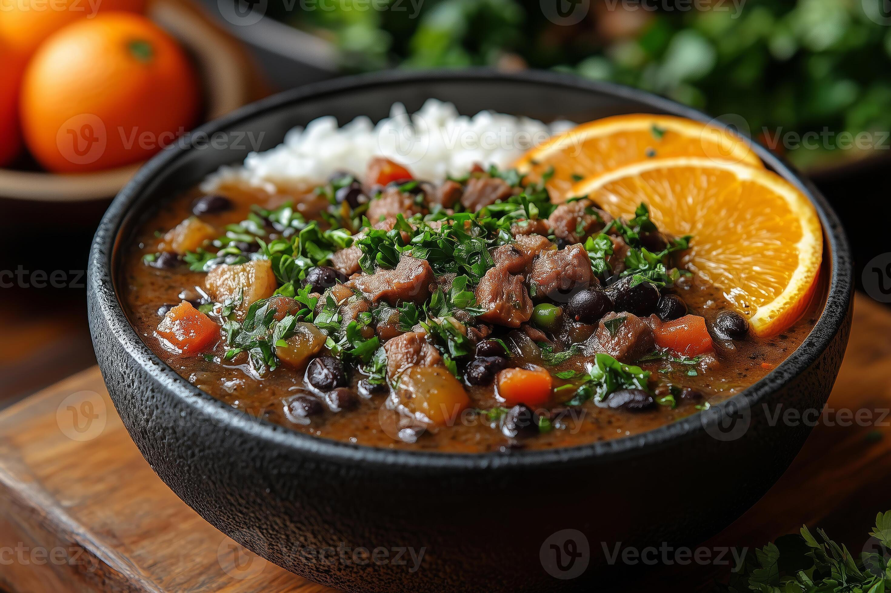

Brazilian Black Bean Stew

Description
Feijoada is a magnificent, slow-cooked black bean stew that stands as the crown jewel of Brazilian cuisine. This hearty dish simmered to perfection combines deeply seasoned black beans with a rich assortment of savory meats, including smoky bacon, tender pork ribs, and traditional sausages. The slow cooking process allows the complex flavors of garlic, onions, and bay leaves to infuse completely, creating a thick, comforting broth that is truly unforgettable.
More than just a meal, feijoada represents a cherished culinary ritual across Brazil, traditionally gathered around on vibrant weekends with family and friends. To perfectly balance its robust, rich flavor profile, it is universally served alongside fluffy white rice, crispy farofa, refreshing orange slices, and sautéed collard greens. This combination delivers an authentic explosion of tastes and textures that defines the ultimate Brazilian dining experience.
Recipe Information
- Prep Time:
8 hrs 30 mins
- Cook Time:
2 hrs 55 mins
- Total Time:
11 hrs 25 mins
- Servings:
8
Ingredients
- 1 tablespoon olive oil
- 1 ½ cups chopped onion, divided
- ½ cup green onions, chopped
- 1 clove garlic, chopped
- 1 (12 ounce) package dry black beans, soaked overnight
- 2 smoked ham hocks
- 8 ounces diced ham
- ½ pound thickly sliced bacon, diced
- 2 bay leaves, crushed
- ⅛ teaspoon ground coriander
- salt and pepper to taste
- ½ cup chopped fresh cilantro (Optional)
- ¼ cup chopped fresh parsley (Optional)
Steps
- Gather all ingredients.
- Heat olive oil in a large pot or Dutch oven. Add 3/4 cup chopped onion, green onions, and garlic; cook and stir until softened, about 4 minutes.
- Pour in soaked beans and fill with enough water to cover beans by 3 inches. Bring to a boil, then reduce heat to medium-low, and simmer uncovered until tender, about 2 hours.
- While beans are cooking, place ham hocks in a smaller pot with 1/4 cup chopped onion.
- Cover with water and simmer until meat pulls off the bone easily, about 1 hour.
- Drain and add to beans. Meanwhile, preheat the oven to 375 degrees F (190 degrees C).
- Place ham, bacon, and remaining 1/2 cup chopped onion in a baking dish. Bake in the preheated oven until mixture is crispy, 15 minutes.
- Drain bacon and ham mixture and add to beans. Season with bay leaves, coriander, salt, and pepper. Simmer, uncovered, for 30 minutes more.
- Stir in chopped cilantro and parsley just before serving.
Home